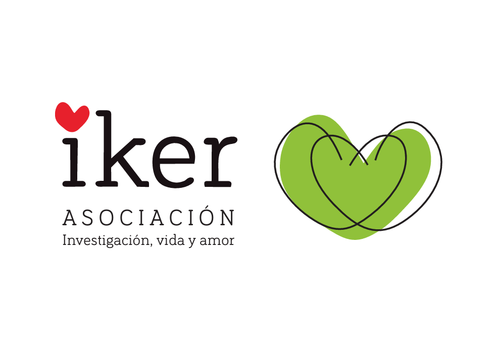
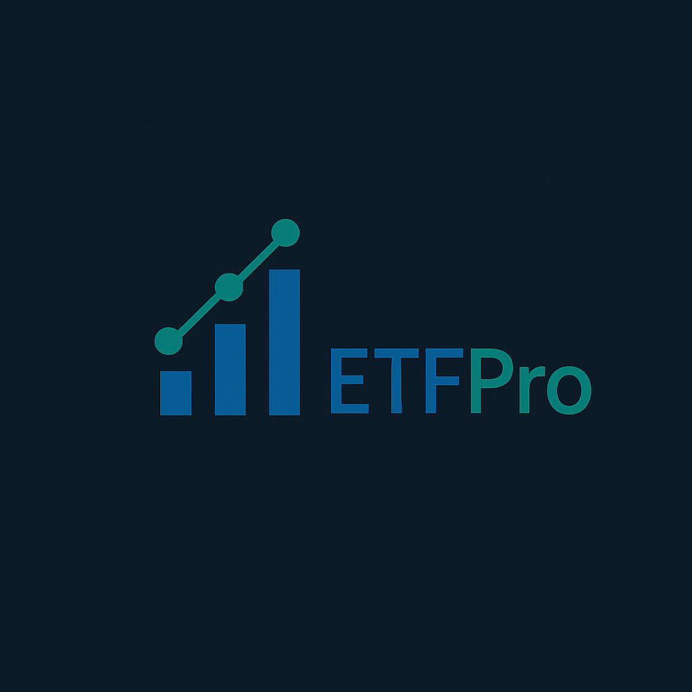
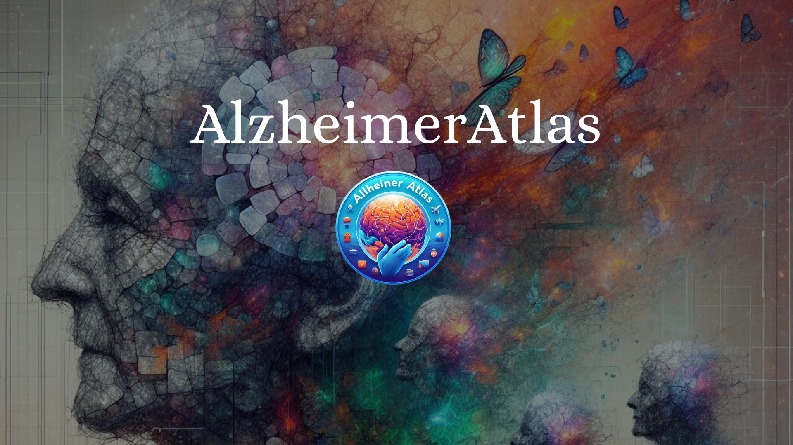
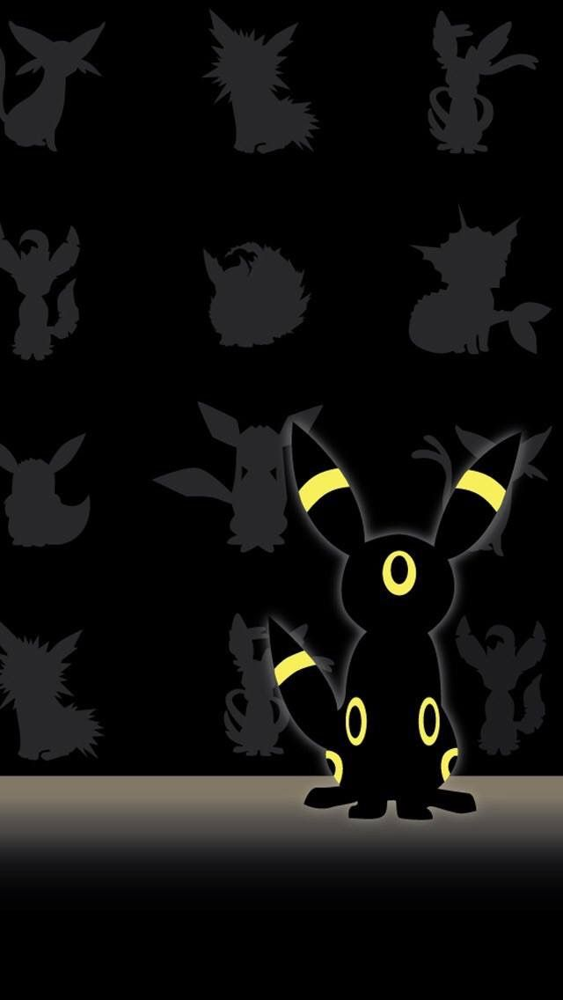

Perfil
Soy estudiante de Ingeniería Informática en la Escuela Superior de Informática de la UCLM, apasionado por el diseño de aplicaciones y la gestión de proyectos. Me interesa crear soluciones tecnológicas que generen un impacto real, cuidando tanto la funcionalidad como la experiencia de usuario. Me considero una persona que sabe trabajar en equipo, con comunicación efectiva y resolutivo con los problemas que se me plantean. Busco seguir formándome y aportar mi talento en proyectos que apuesten por la innovación, el trabajo colaborativo y la mejora constante.
Competencias
Stack
Trabajo

DestacadoDiseño y desarrollo de una página web para la Asociación Iker, creada para mejorar la visibilidad de la entidad, facilitar la captación de socios y promover las donaciones. Experiencia valiosa para aplicar no solo las habilidades tecnologicas, sino también la capacidad de entender las necesidades del cliente y traducirlas en una solución efectiva.

Aplicación web para analizar ETFs y gestionar carteras de inversión, integrando APIs financieras y dashboards interactivos.

Aplicación de escritorio diseñada para apoyar a pacientes con Alzheimer y sus familiares.

Aplicación de escritorio inspirada en Pokémon que permite gestionar y consultar una Pokédex con información de cada pokemon, visualizar los Pokémon propios y realizar combates, ya sea en modo individual contra la IA o en modo multujugador con dos jugadores.
Trayectoria
Febrero 2023 – Mayo 2023
TrabajoDiseño e implementación de la página web para la academia CFManá, con foco en accesibilidad y experiencia de usuario. El proyecto se desarrolló con WIX para facilitar su actualización futura por parte del equipo.
Septiembre 2025 – Actualidad
VoluntariadoDesarrollo de la nueva página web de la asociación, con especial foco en voluntariado, eventos y comunicación. Se empleó WordPress para permitir una gestión autónoma del contenido.
NTT DATA Europe & Latam · Noviembre 2025
Concurso / PremioReconocimiento otorgado por NTT DATA Europe & Latam y la Escuela Superior de Informática por el desarrollo del mejor proyecto de consultoría tecnológica, destacando el análisis estratégico, la innovación propuesta y la presentación del caso final en equipo.
Formación
Certificado oficial de competencia comunicativa en inglés, avalado por el Marco Común Europeo de Referencia para las Lenguas (MCERL), que evalúa comprensión auditiva, expresión oral y escrita.
Nivel B1 – CEFR2019
Programa intensivo de 40 horas centrado en el desarrollo de la fluidez comunicativa y la comprensión oral en inglés, mediante actividades prácticas con profesores nativos de Reino Unido, Canadá, Estados Unidos e Irlanda.
2019 – Actualidad
Formación universitaria orientada al desarrollo de soluciones tecnológicas y gestión de proyectos informáticos, con especialización en Tecnologías de la Información (TI).
Acreditaciones
25de abril de 2020
Certificación de cursos de google junto con IAB de Europa y The Open University en Fundamentos de Marketing Digital con una duración de 40 horas.
Ver certificado27 de abril de 2020
Certificación de cursos de google junto con la Universidad Complutense de Madrid en Fundamentos de Desarrollo de Apps Móviles con una duración de 40 horas.
Ver certificado15/08/2022 - 19/08/2022
Durante el verano de 2022, fui beneficiario de una beca otorgada por la Universidad Internacional Menéndez Pelayo (UIMP) para participar en un curso de inmersión lingüística en inglés, que consistió en una formación intensiva con hablantes nativos, centradas en conversación, comunicación efectiva y habilidades sociales.
Ver certificadooctubre de 2019
Acreditación oficial de nivel B1 según el Marco Común Europeo de Referencia para las Lenguas (MCERL), que certifica las competencias en comprensión auditiva, expresión oral y escrita en inglés.
Nivel B1 – CEFR Ver título12 de mayo de 2025
Participación en los seminarios organizados por la Ibero-American Conference on Software Engineering (CIBSE), centrados en sostenibilidad, ingeniería de software y aplicaciones de inteligencia artificial en entornos profesionales, con una duración de 20 horas.
Ver certificados25 de febrero de 2026
Curso enfocado en el aprendizaje de Power BI, impartido por expertos de Santander Academy, que abarcó desde los fundamentos de la herramienta hasta su aplicación en análisis de datos y generación de informes interactivos, con una duración total de 8 horas.
Ver certificadoHablemos
¿Quieres contactar conmigo? Escríbeme o visita mis redes.